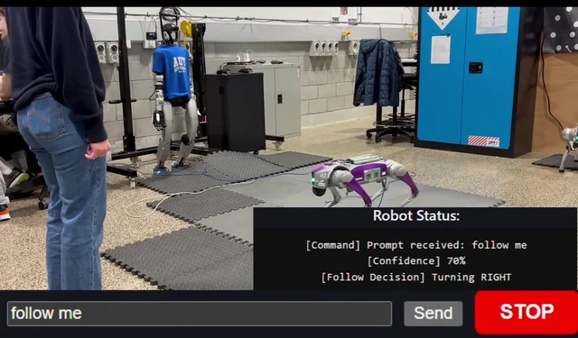
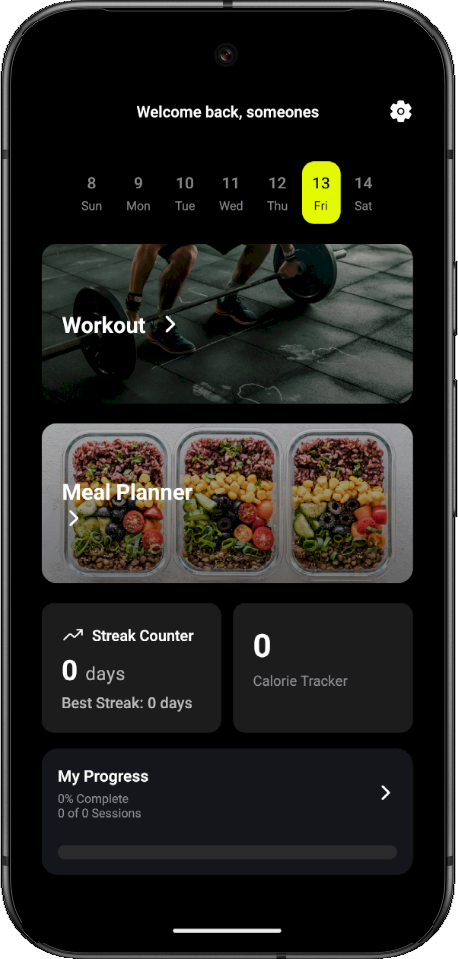

Ongoing research · AUT and Spark NZ
Robotic inspection and thermal analytics
I develop arm positioning and thermal analysis tools, and work on robot localization.
View project
1 / 2
Software, robotics and data
Ongoing research · AUT and Spark NZ
I develop arm positioning and thermal analysis tools, and work on robot localization.
View project1 / 2
Vision models, object detection and command handling for a Unitree Go2.

Retrieval from lecture slides with references to the course, lecture and slide.
Spatial features and Gaussian Process Regression for modelling land cost.
A team-built fitness app for workout logging and progress tracking.


A comparison of three machine learning algorithms.
My background at AUT is in data science and software development. I’m currently working on robot control and thermal imaging.
Outside work, I run, hike, lift weights and play guitar.